The hero shop, raid ranks and the week's boards
Heroes can now be locked behind a currency that is only earned by playing: obols. Twelve heroes are free for everyone, six more are free each week, the rest are bought. With it came the Raid's rewards that were waiting: raid ranks and the week's boards. Everything here is built and committed; nothing is pushed or live. The pictures are of the real game page against the real game server, taken by the computer: seven bots played a duel and three raids first, so the obols, the rank and the boards in them were truly earned. Nobody has played with it yet.
The shop is ON in the code. Accounts that exist when it arrives keep every hero. Whether it goes live is your call at
the deploy. To deploy with it off, set "vars": { "SHOP": "off" } in wrangler.jsonc: every hero is
then free as today, and obols are still earned and kept for the day it is switched on.
The Shop
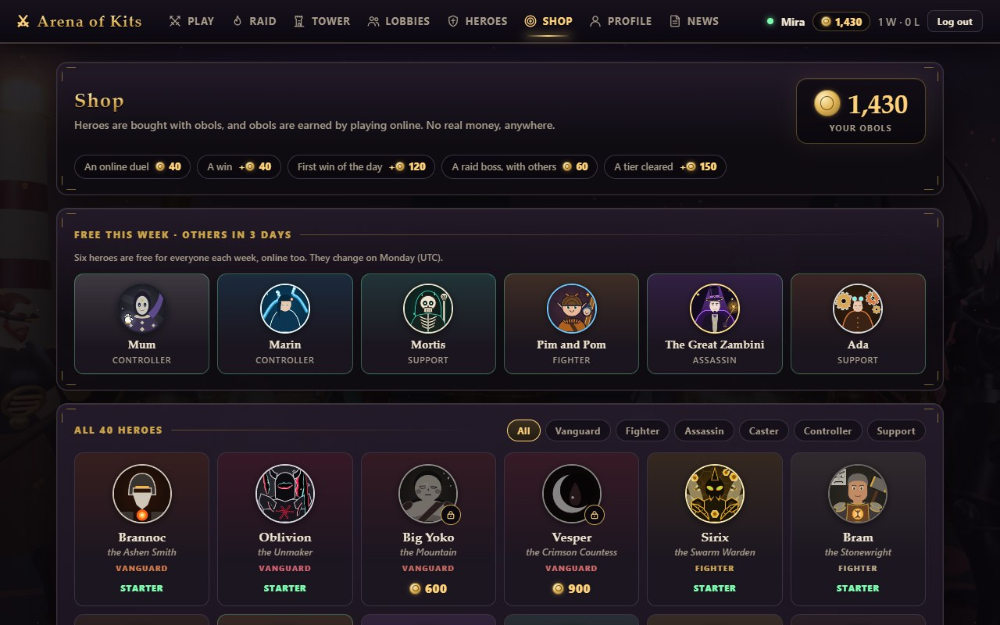
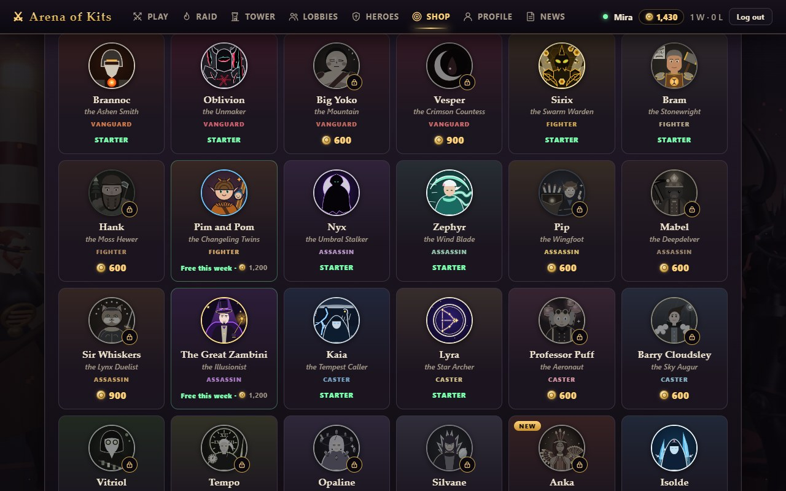
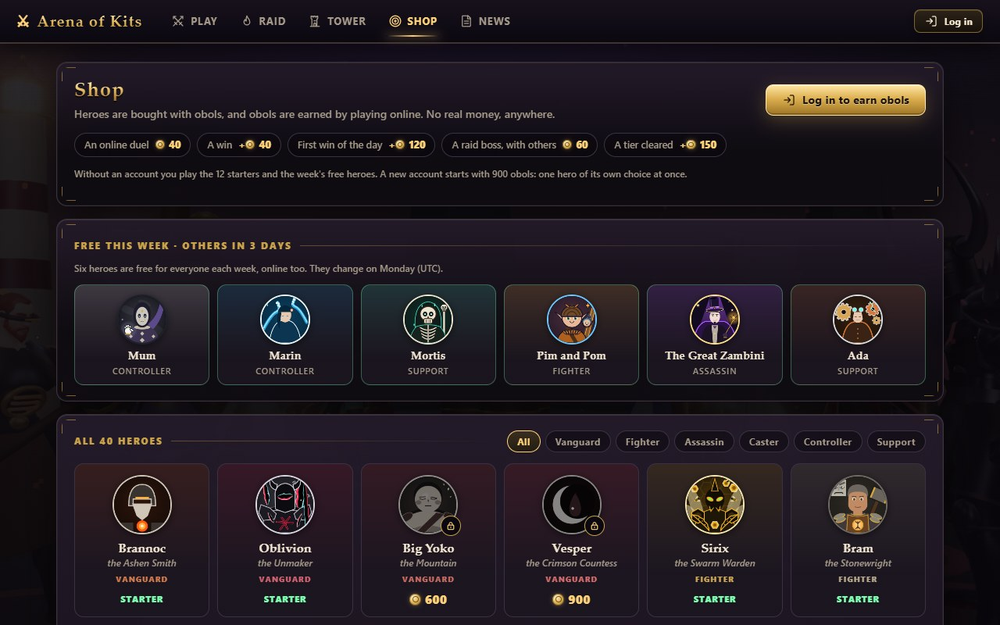
Buying a hero
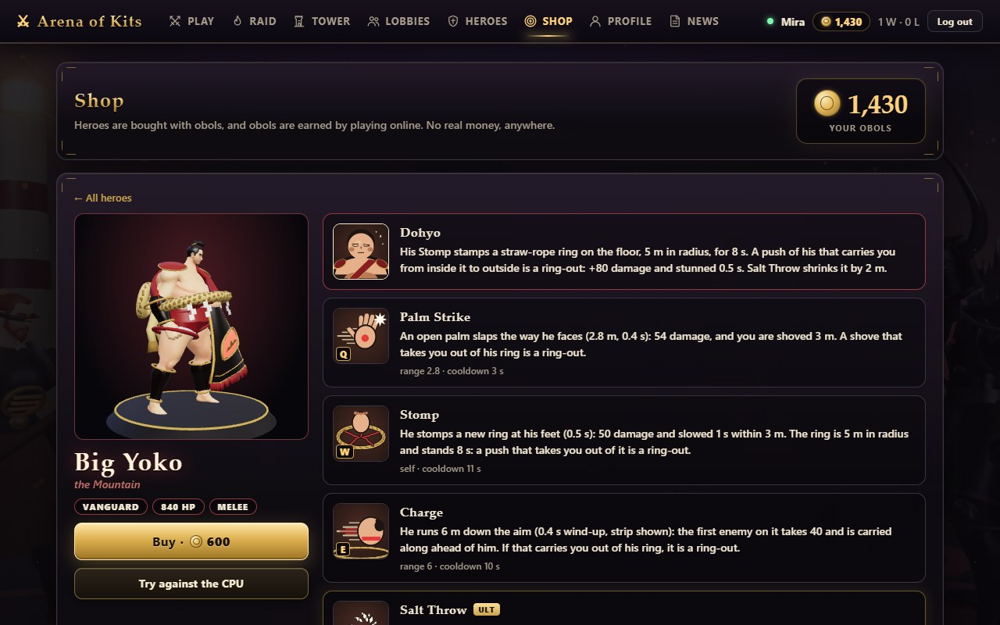
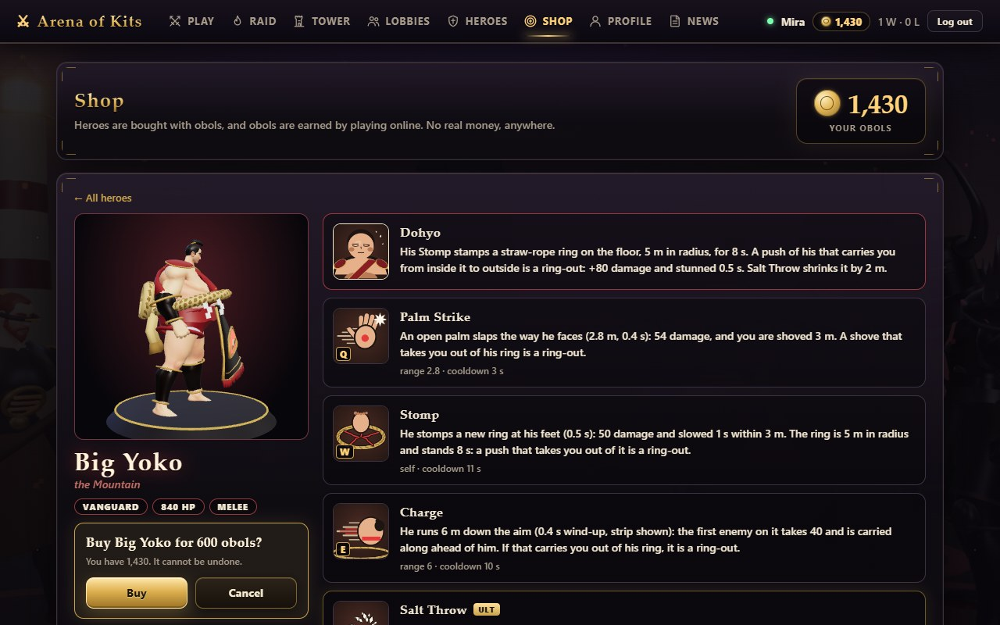
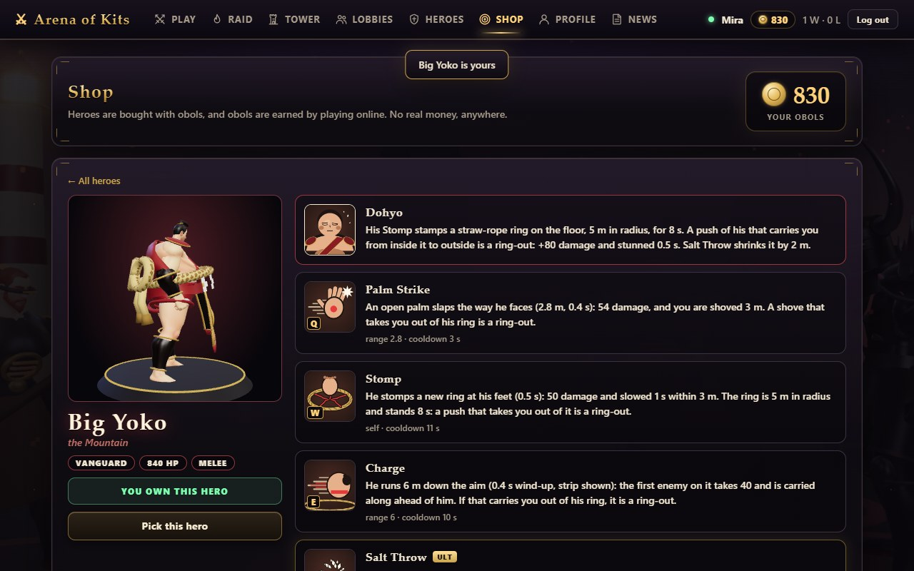
A locked hero in a picker
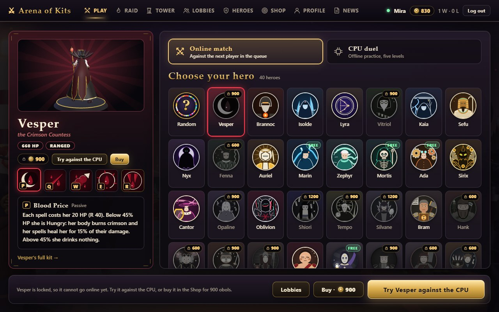
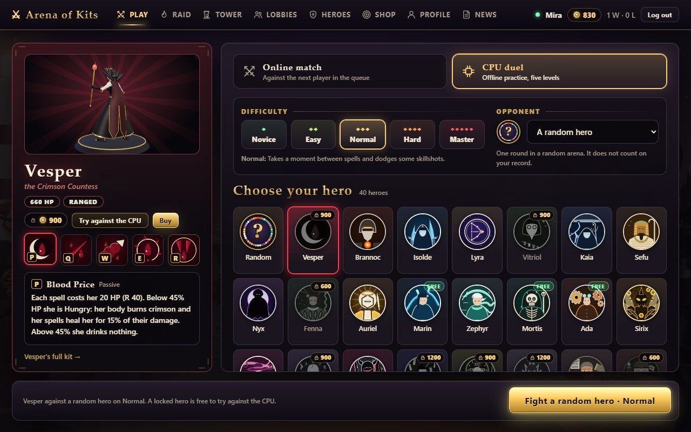
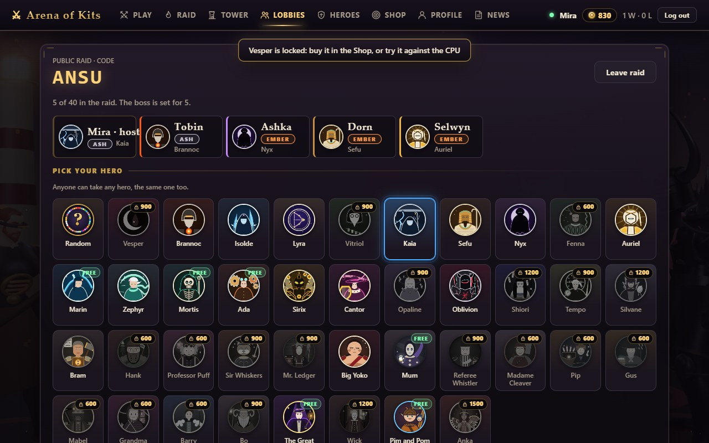
The profile: obols and raid rank
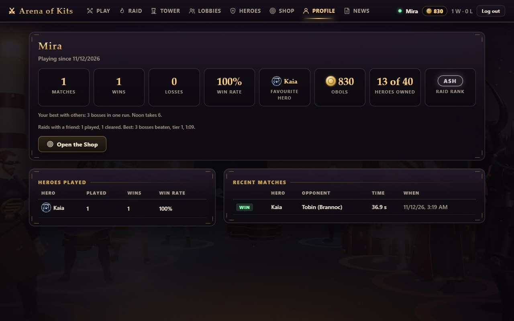
The Raid screen: your rank, and this week's best runs
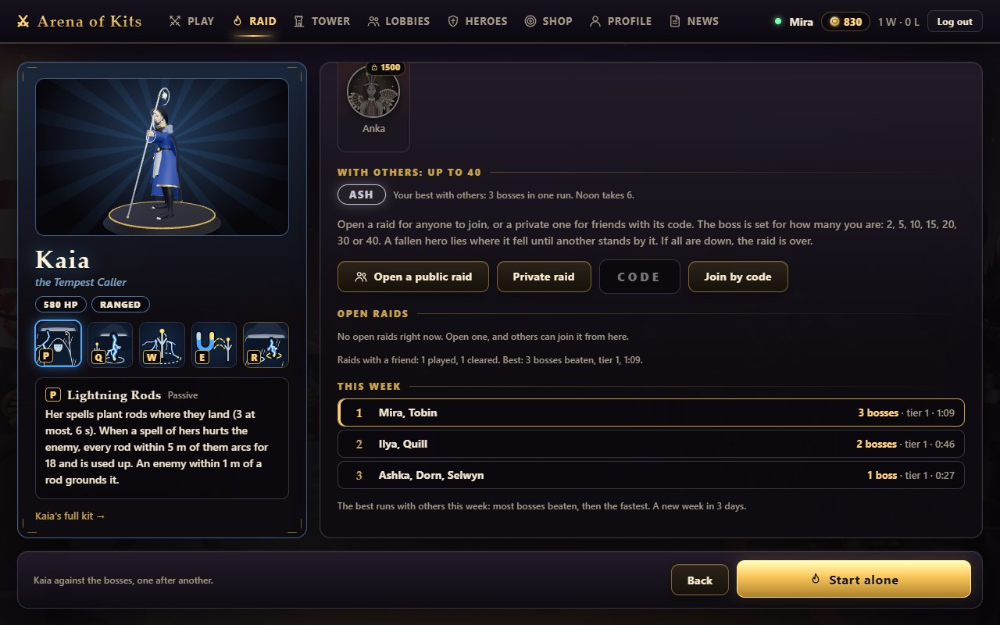
The Tower screen: this week's highest floors
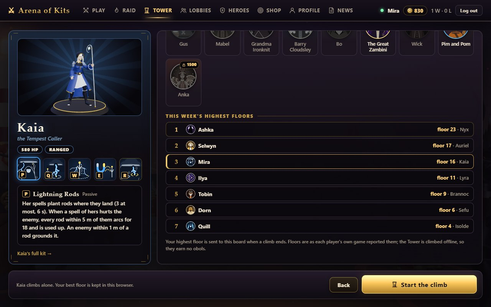
On a phone (390 x 844)
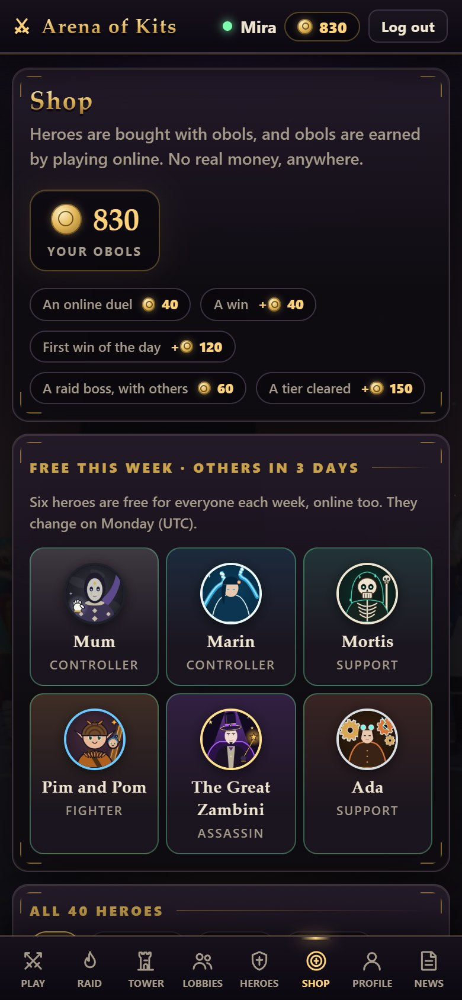
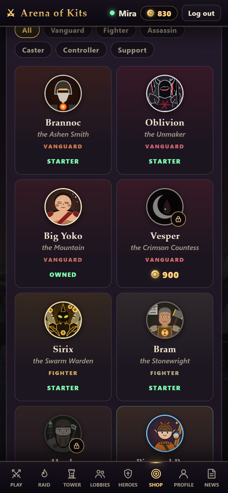
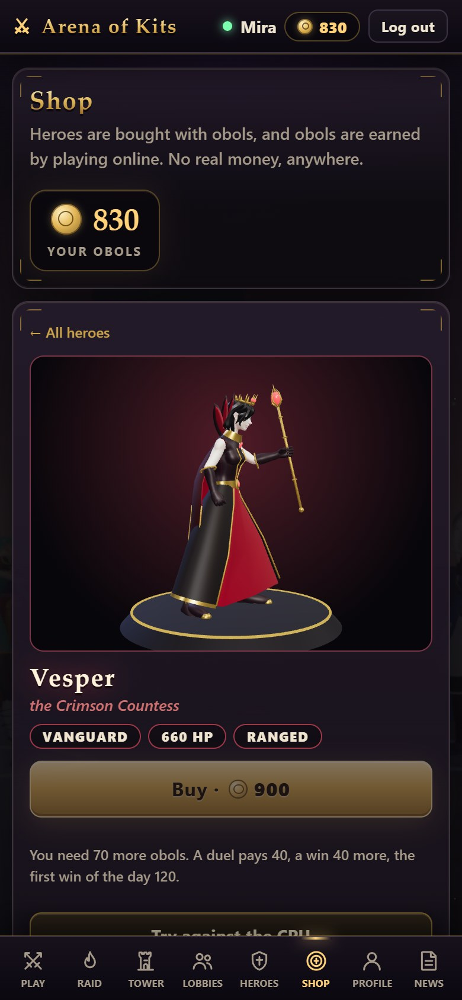
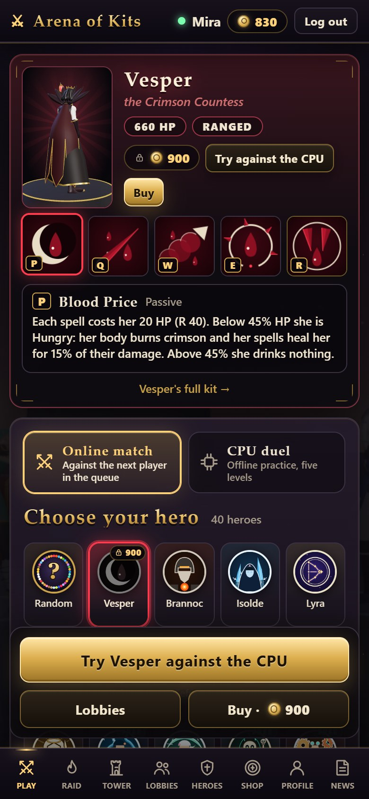
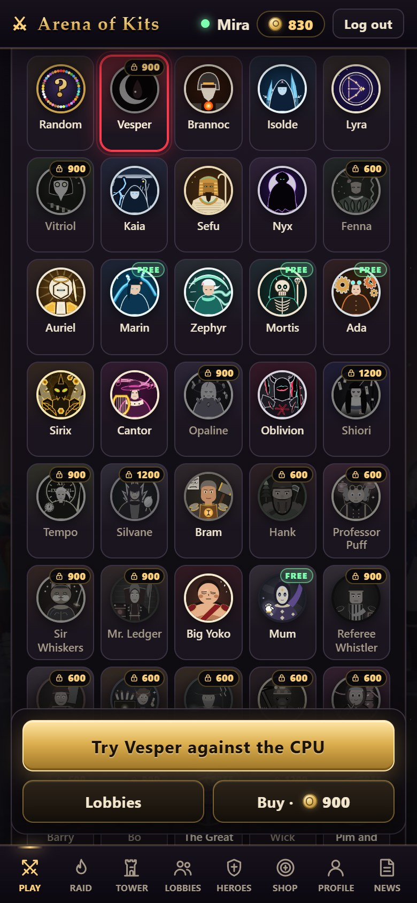
What was decided
| Kind of play | Starters (free, for good) | 600 | 900 | 1,200 |
|---|---|---|---|---|
| Vanguard | Brannoc, Oblivion | Big Yoko | Vesper | |
| Fighter | Sirix, Bram | Hank | Pim and Pom | |
| Assassin | Nyx, Zephyr | Pip, Mabel | Sir Whiskers | The Great Zambini |
| Caster | Kaia, Lyra | Professor Puff, Barry Cloudsley | Vitriol, Tempo, Opaline | Silvane, Anka (1,500 until 10 December) |
| Controller | Isolde, Sefu | Gus | Marin, Mr. Ledger, Referee Whistler | Mum, Wick |
| Support | Cantor, Auriel | Fenna, Madame Cleaver, Grandma Ironknit | Mortis, Bo | Shiori, Ada |
Two starters of each kind, the six benchmark heroes of the balance work among them. The shelves are by how hard a hero is to play well. All of this is one table in the code, easy to change.
| What pays | Obols | When it counts |
|---|---|---|
| An online duel | 40 | It lasted half a minute or more, and you did not leave it |
| A win | +40 | The same |
| The first win of the day | +120 | Once a day (the server's day, UTC) |
| A raid boss beaten with others | 60 each | Two or more were still in the raid, and the fight lasted 20 seconds or more |
| A tier cleared with others | +150 | All three bosses of the tier counted |
| A new account | 900 | One hero of its own choice at once |
- The week's free heroes: six, never a starter, the same for everyone, new each Monday (UTC). Every hero is free three weeks in fourteen, and no two weeks in a row share a hero. This week: Mum, Marin, Mortis, Pim and Pom, The Great Zambini, Ada.
- Founders: the first time the server starts with the shop on, it writes down the moment. Every account made before it owns all 40 heroes, and has 900 obols too. Heroes added later are for the shop.
- The server decides who may take which hero into a duel or a raid room. The page only draws the locks.
- Raid ranks: Ember from 1 boss beaten in one run with others, Ash from 3, Noon from 6, Eclipse from 9.
- Against farming: a duel under 30 seconds pays nobody, whoever leaves a duel gets nothing, and a boss that falls in under 20 seconds pays nothing and counts for no rank or board.
Checked, and not
- The server's own test: all its older checks pass unchanged, and 42 new ones for the shop, the ranks and the boards.
- Type check and build pass. The page logged no errors while these pictures were taken.
- The Cloudflare store, on this computer only: a purchase, the obols and a board row are still there after the worker is stopped and started; an account made before the shop is a founder once it is switched on.
- Not checked: the live server (it has not had this build); a person playing with it; a real phone. The prices and the pace of earning are a first guess: about one 900 hero for an evening.
- Not built: obols for the Tower (it waits for a Tower the server can see), and anything with real money: there is none.
The design, every decision and the messages: pipeline/designs/hero-shop.md. How it works:
docs/architecture/multiplayer.md. These pictures again: python pipeline/tools/shop-shots.py.